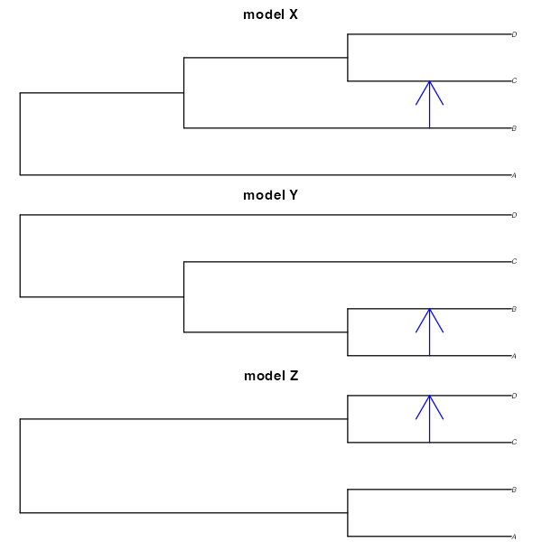

vignettes/vignette-06-diagnostics.Rmd
vignette-06-diagnostics.Rmd| title: “Downstream analyses, model selection, troubleshooting” |
| output: rmarkdown::html_vignette |
| vignette: > |
| % |
| % |
| % |
library(demografr)
library(slendr)
init_env()
#> The interface to all required Python modules has been activated.
library(future)
plan(multisession, workers = availableCores())
SEED <- 42
set.seed(SEED)⚠️⚠️⚠️
Note: The demografr R package is still under active development. As a result, its documentation is in a draft stage at best. Typos, inconsistencies, and other issues are unfortunately expected.
⚠️⚠️⚠️
Let’s return to our first example. However, this time, imagine that we don’t really know which of the three following phylogenetic relationships is the one that captures the features of our data best, perhaps with different sources of evidence being consistent with each one of them so we want to consider all three in our modeling (as always, this is purely a toy example). These models differ both in terms of tree topology of the population relationships as well as in the gene flow, and we want to perform model selection.

For completeness, here is again our observed data which was, in reality, generated by a hidden evolutionary process we’re trying to understand by running ABC:
- Nucleotide diversity in each population:
observed_diversity <- read.table(system.file("examples/observed_diversity.tsv", package = "demografr"), header = TRUE)
observed_diversity#> set diversity
#> 1 popA 8.037847e-05
#> 2 popB 3.242467e-05
#> 3 popC 1.021123e-04
#> 4 popD 8.968777e-05- Pairwise divergence d_X_Y between populations X and Y:
observed_divergence <- read.table(system.file("examples/observed_divergence.tsv", package = "demografr"), header = TRUE)
observed_divergence#> x y divergence
#> 1 popA popB 0.0002387594
#> 2 popA popC 0.0002391843
#> 3 popA popD 0.0002389617
#> 4 popB popC 0.0001089125
#> 5 popB popD 0.0001155571
#> 6 popC popD 0.0001105323- Value of the following \(f_4\)-statistic:
observed_f4 <- read.table(system.file("examples/observed_f4.tsv", package = "demografr"), header = TRUE)
observed_f4#> W X Y Z f4
#> 1 popA popB popC popD -3.433205e-06
#> 2 popA popC popB popD -7.125812e-07
#> 3 popA popD popB popC 2.720624e-06We will again bind them into a list:
observed <- list(diversity = observed_diversity, divergence = observed_divergence, f4 = observed_f4)Three competing models
First, in order to perform model selection, we need to specify models themselves. We do this by defining three separate slendr functions, each of them encoding the three phylogenetic relationships from the diagrams above. Note that we’re not trying to infer the time of gene flow, for simplicity, but we do fix the gene flow event to different times (again, reflected in the alternative model sketches above):
modelX <- function(Ne_A, Ne_B, Ne_C, Ne_D, T_1, T_2, T_3, gf) {
popA <- population("popA", time = 1, N = Ne_A)
popB <- population("popB", time = T_1, N = Ne_B, parent = popA)
popC <- population("popC", time = T_2, N = Ne_C, parent = popB)
popD <- population("popD", time = T_3, N = Ne_D, parent = popC)
gf <- gene_flow(from = popB, to = popC, start = 9000, end = 9301, rate = gf)
model <- compile_model(
populations = list(popA, popB, popC, popD), gene_flow = gf,
generation_time = 1, simulation_length = 10000,
direction = "forward"
)
samples <- schedule_sampling(
model, times = 10000,
list(popA, 25), list(popB, 25), list(popC, 25), list(popD, 25),
strict = TRUE
)
return(list(model, samples))
}
modelY <- function(Ne_A, Ne_B, Ne_C, Ne_D, T_1, T_2, T_3, gf) {
popA <- population("popA", time = 1, N = Ne_A)
popB <- population("popB", time = T_1, N = Ne_B, parent = popA)
popC <- population("popC", time = T_2, N = Ne_C, parent = popA)
popD <- population("popD", time = T_3, N = Ne_D, parent = popC)
gf <- gene_flow(from = popA, to = popC, start = 7000, end = 7301, rate = gf)
model <- compile_model(
populations = list(popA, popB, popC, popD), gene_flow = gf,
generation_time = 1, simulation_length = 10000,
direction = "forward"
)
samples <- schedule_sampling(
model, times = 10000,
list(popA, 25), list(popB, 25), list(popC, 25), list(popD, 25),
strict = TRUE
)
return(list(model, samples))
}
modelZ <- function(Ne_A, Ne_B, Ne_C, Ne_D, T_1, T_2, T_3, gf) {
popA <- population("popA", time = 1, N = Ne_A)
popB <- population("popB", time = T_1, N = Ne_B, parent = popA)
popC <- population("popC", time = T_2, N = Ne_C, parent = popA)
popD <- population("popD", time = T_3, N = Ne_D, parent = popA)
gf <- gene_flow(from = popB, to = popC, start = 9000, end = 9301, rate = gf)
model <- compile_model(
populations = list(popA, popB, popC, popD), gene_flow = gf,
generation_time = 1, simulation_length = 10000,
direction = "forward"
)
samples <- schedule_sampling(
model, times = 10000,
list(popA, 25), list(popB, 25), list(popC, 25), list(popD, 25),
strict = TRUE
)
return(list(model, samples))
}Now, let’s specify priors using demografr’s templating syntax. This saves us a bit of typing, making the prior definition code a bit more consise and easier to read:
priors <- list(
Ne... ~ runif(100, 10000),
T_1 ~ runif(1, 4000),
T_2 ~ runif(3000, 9000),
T_3 ~ runif(5000, 10000),
gf ~ runif(0, 1)
)Let’s also put together a list of tree-sequence summary functions and observed summary statistics:
compute_diversity <- function(ts) {
samples <- ts_names(ts, split = "pop")
ts_diversity(ts, sample_sets = samples)
}
compute_divergence <- function(ts) {
samples <- ts_names(ts, split = "pop")
ts_divergence(ts, sample_sets = samples)
}
compute_f4 <- function(ts) {
samples <- ts_names(ts, split = "pop")
A <- samples["popA"]; B <- samples["popB"]
C <- samples["popC"]; D <- samples["popD"]
rbind(
ts_f4(ts, A, B, C, D),
ts_f4(ts, A, C, B, D),
ts_f4(ts, A, D, B, C)
)
}
functions <- list(diversity = compute_diversity, divergence = compute_divergence, f4 = compute_f4)Let’s validate the ABC setup of all three models – this is an important check that the slendr model functions are defined correctly:
validate_abc(modelX, priors, functions, observed, quiet = TRUE)
validate_abc(modelY, priors, functions, observed, quiet = TRUE)
validate_abc(modelZ, priors, functions, observed, quiet = TRUE)With that out of the way, we can proceed with generating simulated
data for inference using all three models. What we’ll do is perform
three runs and save them into appropriately named variables
dataX, dataY, and dataZ:
dataX <- simulate_abc(modelX, priors, functions, observed, iterations = 10000,
sequence_length = 10e6, recombination_rate = 1e-8, mutation_rate = 1e-8)
dataY <- simulate_abc(modelY, priors, functions, observed, iterations = 10000,
sequence_length = 10e6, recombination_rate = 1e-8, mutation_rate = 1e-8)
dataZ <- simulate_abc(modelZ, priors, functions, observed, iterations = 10000,
sequence_length = 10e6, recombination_rate = 1e-8, mutation_rate = 1e-8)The total runtime for the ABC simulations was 0 hours 59 minutes 34 seconds parallelized across 96 CPUs.
Cross-validation
Before doing model selection, it’s important to perform cross-validation to answer the question whether our ABC setup can even distinguish between the competing models.
This can be done using demografr’s
cross_validate() function which is built around
abc’s own function cv4postpr(). We will not go
into too much detail, as this function simply calls
cv4postpr() under the hood, passing to it all specified
function arguments on behalf of a user to avoid unnecessary manual data
munging. For more details, read section “Model selection” in the vignette
of the abc R package.
The one difference between the two functions is that
cross_validate() removes the need to prepare character
indices and bind together summary statistic matrices from different
models—given that demografr’s ABC output objects track all this
information along in their internals, this is redundant, and you can
perform cross-validation of different ABC models simply by calling
this:
models <- list(abcX, abcY, abcZ)
cv_result <- cross_validate(models = models, nval = 100, tol = 0.01, method = "neuralnet")If we print out the result, we get a quick summary with confusion matrices and other information:
cv_result#> Confusion matrix based on 100 samples for each model.
#>
#> $tol0.01
#> modelX modelY modelZ
#> modelX 90 8 2
#> modelY 0 100 0
#> modelZ 0 5 95
#>
#>
#> Mean model posterior probabilities (neuralnet)
#>
#> $tol0.01
#> modelX modelY modelZ
#> modelX 0.8854 0.0869 0.0276
#> modelY 0.0860 0.9053 0.0087
#> modelZ 0.0064 0.0531 0.9405Similarly, you can use the plot() function to visualize
the result. This function, yet again, internally calls abc’s
own plotting method internall, with a bonus option to save a figure to a
PDF right from the plot() call (useful when working on a
remote server):
plot(cv_result)
Because we have three models, each of the three barplots shows how often were summary statistics sampled from each model classified as likely coming from one of the three models. In other words, with absolutely perfect classification, each barplot would show just one of the three colors. If a barplot (results for one model) shows multiple colors, this means that some fraction of simulated statistics from that model was incorrectly classified as another model. Again, for more detail on interpretation, caveats, and best practices, please consult the abc R package vignette and a relevant statistical textbook.
The confusion matrices and the visualization all suggest that ABC can
distinguish between the three models very well. For instance,
modelX has been classified correctly in 90 simulations out of
the total of 100 cross-validation simulations, with an overall
misclassification rate for all models of only
{r sprintf("%.1f", cv_result$estim[[1]] %>% { 1 - mean(names(.) == .) } * 100)}%.
Model selection
Armed with confidence in the ability of ABC to correctly identify the
correct model based on simulated data, we can proceed to selection of
the best model for our empirical data set. This can be done with the
function select_model() which is demografr’s
convenience wrapper around abc’s own function
postpr:
models <- list(abcX, abcY, abcZ)
modsel <- select_model(models, tol = 0.03, method = "neuralnet")We can make a decision on the model selection by inspecting the
summary() of the produced result:
summary(modsel)#> Call:
#> abc::postpr(target = observed_stats, index = model_names, sumstat = model_stats,
#> tol = 0.03, method = "neuralnet")
#> Data:
#> postpr.out$values (900 posterior samples)
#> Models a priori:
#> modelX, modelY, modelZ
#> Models a posteriori:
#> modelX, modelY, modelZ
#>
#> Proportion of accepted simulations (rejection):
#> modelX modelY modelZ
#> 0.9667 0.0322 0.0011
#>
#> Bayes factors:
#> modelX modelY modelZ
#> modelX 1.0000 30.0000 870.0000
#> modelY 0.0333 1.0000 29.0000
#> modelZ 0.0011 0.0345 1.0000
#>
#>
#> Posterior model probabilities (neuralnet):
#> modelX modelY modelZ
#> 1 0 0
#>
#> Bayes factors:
#> modelX modelY modelZ
#> modelX 1.0000 247177.1380 112916.2144
#> modelY 0.0000 1.0000 0.4568
#> modelZ 0.0000 2.1890 1.0000As we can see, modelX shows the highest rate of
acceptance among all simulations. Specifically, we see that the
proportion of acceptance is 96.7%.
Similarly, looking at the Bayes factors, we see that the “modelX” is 30.0 times more likely than “modelY”, and 870.0 more likely than “modelZ”.
When the posterior probabilities are computed using a more elaborate neural network method (again, see more details in the abc vignette), we find that the probability of “modelX” is even more overwhelming. In fact, the analysis shows that it has a 100% probabiliy of being the correct model to explain our data.
But how accurate are these conclusions? Well, if we
take a peek at the slendr model which was internally
used to generate the “observed” summary statistics, we see that the
data was indeed simulated by code nearly identical to the one shown
above as modelX. When plotted, the true model looks like
this:
popA <- population("popA", time = 1, N = 2000)
popB <- population("popB", time = 2000, N = 800, parent = popA)
popC <- population("popC", time = 6000, N = 9000, parent = popB)
popD <- population("popD", time = 8000, N = 4000, parent = popC)
gf <- gene_flow(from = popB, to = popC, start = 9000, end = 9301, rate = 0.1)
example_model <- compile_model(
populations = list(popA, popB, popC, popD), gene_flow = gf,
generation_time = 1,
simulation_length = 10000
)
plot_model(example_model, proportions = TRUE)
Goodness-of-fit
http://www.stat.columbia.edu/~gelman/research/published/A6n41.pdf
So, it appears that we can be quite confident in which of the three models best represents the data. However, before we move on to inferring parameters of the model, we should check whether the best selected model can indeed capture the most important features of the data, which is in case of ABC represented by our summary statistics.
The abc R package provides two functions,
gfit() and gfitpca(), for which
demografr yet again provides convenient wrappers which leverage
various model metadata stored in each demografr inference
object.
First, there is a function goodness_of_fit() which can
be used in the following way:
gfitX <- goodness_of_fit(abcX, replicates = 1000)
summary(gfitX)#> $pvalue
#> [1] 0.449
#>
#> $s.dist.sim
#> Min. 1st Qu. Median Mean 3rd Qu. Max.
#> 3.696 4.237 4.733 5.226 5.507 25.508
#>
#> $dist.obs
#> [1] 4.843342
plot(gfitX, main = "Histogram for modelX under H0")
gfitY <- goodness_of_fit(abcY, replicates = 1000)
summary(gfitY)#> $pvalue
#> [1] 0.259
#>
#> $s.dist.sim
#> Min. 1st Qu. Median Mean 3rd Qu. Max.
#> 3.929 4.536 5.040 5.403 5.808 14.306
#>
#> $dist.obs
#> [1] 5.745712
plot(gfitY, main = "Histogram for modelY under H0")
gfitZ <- goodness_of_fit(abcZ, replicates = 1000)
summary(gfitZ)#> $pvalue
#> [1] 0.146
#>
#> $s.dist.sim
#> Min. 1st Qu. Median Mean 3rd Qu. Max.
#> 3.943 4.572 5.071 5.651 5.804 18.945
#>
#> $dist.obs
#> [1] 6.466377
plot(gfitZ, main = "Histogram for modelZ under H0")
models <- list(abcX, abcY, abcZ)
names(models) <- vapply(models, function(m) attr(m, "components")$model_name, FUN.VALUE = character(1))
model_nsims <- vapply(models, function(x) nrow(attr(x, "components")$simulated), FUN.VALUE = integer(1))
model_stats <- lapply(models, function(x) attr(x, "components")$simulated) %>% do.call(rbind, .) %>% as.matrix()
model_names <- lapply(seq_along(models), function(i) rep(names(models)[i], model_nsims[i])) %>% unlist()
observed_stats <- bind_observed(attr(models[[1]], "components")$observed)
if (length(colnames(observed_stats)) != length(colnames(observed_stats)) ||
any(colnames(observed_stats) != colnames(model_stats))) {
stop("Observed and simulated statistics matrices are not compatible", call. = FALSE)
}
library(locfit)#> locfit 1.5-9.8 2023-06-11
abc::gfitpca(target = observed_stats, sumstat = model_stats, index = model_names, cprob = 0.1)
plan(multisession, workers = availableCores())
predX <- predict(abcX, 1000, posterior = "unadj")
predY <- predict(abcY, 1000, posterior = "unadj")
predZ <- predict(abcZ, 1000, posterior = "unadj")
plot_prediction(predX, "diversity")
plot_prediction(predX, "divergence")
plot_prediction(predX, "f4")
cowplot::plot_grid(
plot_prediction(predX, "diversity"),
plot_prediction(predY, "diversity"),
plot_prediction(predZ, "diversity"),
nrow = 1
) If more customization or a more detailed analyses is needed, you can
also extract data from the posterior simulations themselves:
If more customization or a more detailed analyses is needed, you can
also extract data from the posterior simulations themselves:
extract_prediction(predX, "diversity")#> # A tibble: 4,000 × 12
#> rep T_1 T_2 T_3 gf Ne_A Ne_B Ne_C Ne_D summary stat value
#> <int> <dbl> <dbl> <dbl> <dbl> <dbl> <dbl> <dbl> <dbl> <chr> <chr> <dbl>
#> 1 1 2146. 5964. 7574. 0.0825 872. 517. 4464. 4286. diversi… dive… 3.04e-5
#> 2 1 2146. 5964. 7574. 0.0825 872. 517. 4464. 4286. diversi… dive… 1.88e-5
#> 3 1 2146. 5964. 7574. 0.0825 872. 517. 4464. 4286. diversi… dive… 7.73e-5
#> 4 1 2146. 5964. 7574. 0.0825 872. 517. 4464. 4286. diversi… dive… 7.59e-5
#> 5 1 2788. 6378. 9272. 0.566 2470. 1654. 3381. 415. diversi… dive… 9.30e-5
#> 6 1 2788. 6378. 9272. 0.566 2470. 1654. 3381. 415. diversi… dive… 6.98e-5
#> 7 1 2788. 6378. 9272. 0.566 2470. 1654. 3381. 415. diversi… dive… 1.14e-4
#> 8 1 2788. 6378. 9272. 0.566 2470. 1654. 3381. 415. diversi… dive… 5.02e-5
#> 9 1 3224. 4595. 9728. 0.216 1947. 592. 6057. 450. diversi… dive… 7.70e-5
#> 10 1 3224. 4595. 9728. 0.216 1947. 592. 6057. 450. diversi… dive… 2.06e-5
#> # ℹ 3,990 more rowsHowever, note that extract_prediction is a convenience
function which only unnests, reformats, and renames the list-columns
with summary statistics stored in the predictions data
frame above. You can do all the processing based on the
predictions object above.